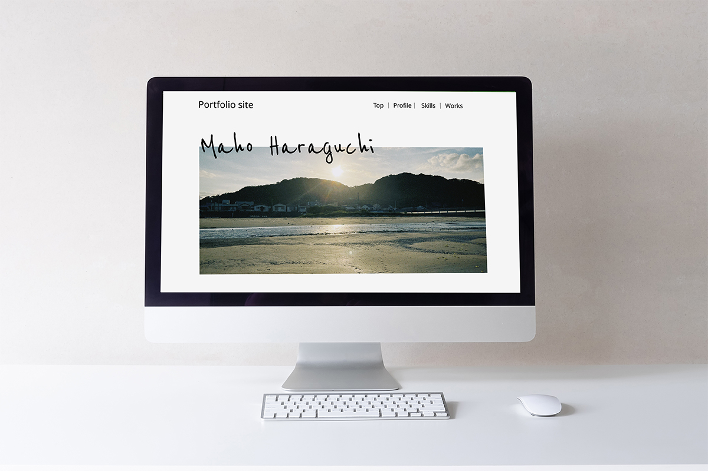

私のポートフォリオサイト
自主制作 / Web Site

About
就職活動用のポートフォリオサイトを制作しました。
就職活動用のポートフォリオとして制作しました。人事の方に見てもらいやすいようにプロフィール、スキル、制作物の流れで情報がスムーズに伝わるようにシンプルに制作しました。 デザインとしてもシンプルなデザインに私の好きな「海」の要素をちりばめて配置しています。
Tools
Photoshop / Figma / HTML / CSS
Schedule
約2週間
← Worksへ戻る